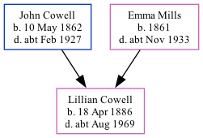

Lillian Eleanor Cowell 1886 - c1969
[ Home ] | [ Calendar ] | [ Surnames Index ] | [ Family History ]The 3rd of 4 children of John Cowell (a police constable) and Emma Mills, Lillian Cowell, the third cousin twice-removed on the mother's side of Nigel Horne, was born in Tooting, London, England on Apr 18, 18861,2,3 and baptized in Wandsworth, London, England on Nov 7, 1886.
Lillian spent all of her life in London, England. Throughout her life, she lived in several places around the county: on 71 Victoria Road, Willesden, London, England on Apr 5, 18914; on 28 Claremont Road, Kilburn on Mar 31, 19015, on Apr 2, 19116 and on Jun 19, 19217 (when she was living with her parents), when she was living with her brother, Bertie Charles; and on 106 Granville Road in Willesden in 1929, in 1936 and on Sep 29, 19391.
She died c. Aug 1969 in Hendon, London3.
Parents
- John Charles was born on May 10, 1862
- Emma Elizabeth was born in 1861
Citations
- 1939 Register - Findmypast (was recorded at this address)
- England & Wales births 1837-2006 - Findmypast
- England & Wales deaths 1837-2007 - Findmypast
- 1891 England, Wales & Scotland Census - Findmypast (was age 4 and the daughter of the head of the household)
- 1901 England, Wales & Scotland Census - Findmypast (was age 14 and the daughter of the head of the household)
- 1911 Census for England & Wales - Findmypast (was age 24 and the daughter of the head of the household)
- 1921 Census Of England & Wales - Findmypast (was age 35 and the daughter of the head of the household)
Media
1891 England, Wales & Scotland Census - GBC/1891/0007931684
England & Wales births 1837-2006 - BMD/B/1886/2/AZ/000131/366
1939 Register - TNA/R39/0971/0971E/009/11
England & Wales deaths 1837-2007 - BMD/D/1969/3/AZ/000216/112
Family Tree
Generated by Ged2Site. Last updated on Jul 20, 2025